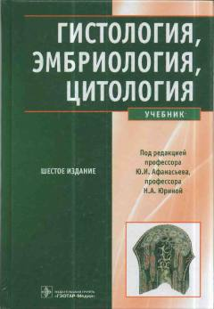

ГЭTibbiyot oliy o'quv yurtlari talabalari uchun gistologiya, embriologiya va tsitologiya bo'yicha asosiy darslik.
Ushbu darslik tsitologiya, embriologiya va gistologiya fanlarining asosiy ma'lumotlarini o'z ichiga oladi. Kitobda hujayralar, to'qimalar va organlarning tuzilishi, rivojlanish bosqichlari hamda yoshga doir o'zgarishlari batafsil bayon etilgan. Nashr tibbiyot oliy o'quv yurtlari talabalari, ordinatorlar va mutaxassislar uchun mo'ljallangan.